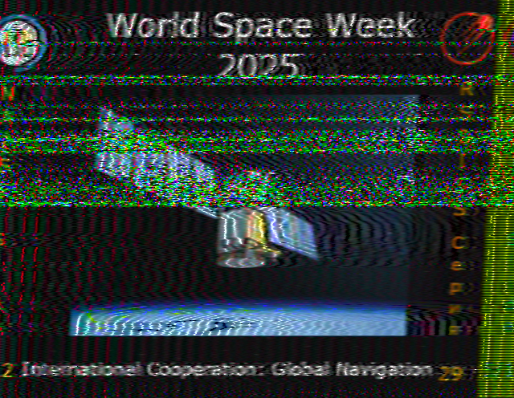
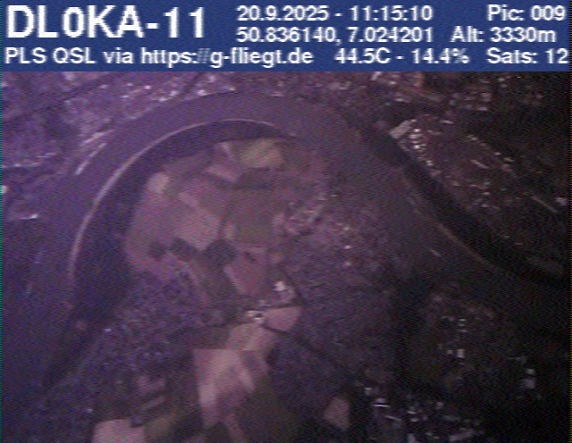
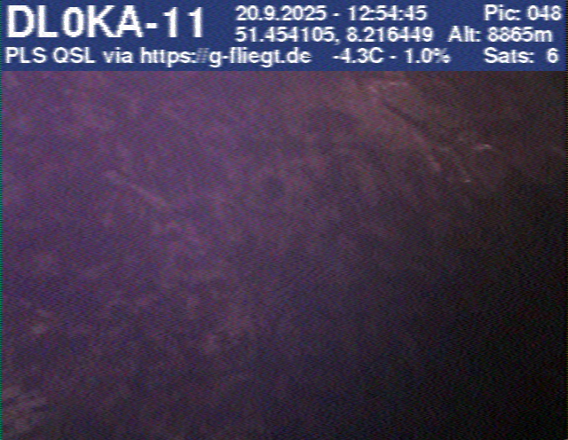
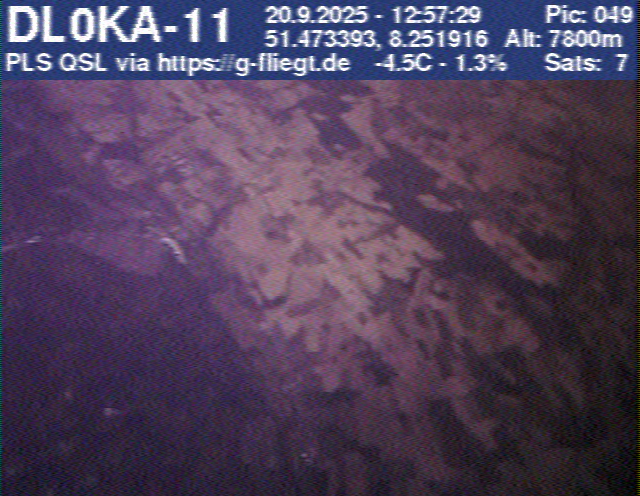
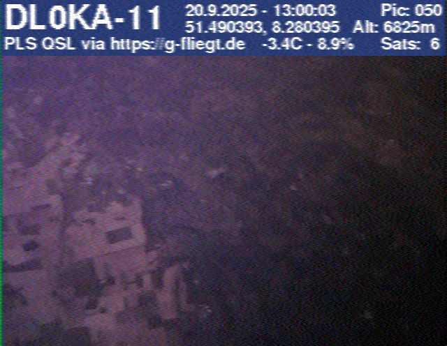

SSTV-Empfänge
SSTV (Slow Scan Television) ermöglicht die Übertragung von Standbildern über Funk. Hier dokumentiere ich meine erfolgreichen Empfänge von der Internationalen Raumstation (ISS) sowie von Amateurfunk-Wetterballonen.
World Space Week – Oktober 2025
Empfangene SSTV-Bilder von der ISS während eines Aktivzeitraums im Oktober 2025. Die Bilder wurden mit einem Handfunkgerät und entsprechender Software dekodiert.

ISS SSTV Bild 4 von 12

ISS SSTV Bild 5 von 12

ISS SSTV Bild 6 von 12
Wetterballon SSTV – September 2025
Im September 2025 habe ich SSTV-Bilder von einem Amateurfunk-Wetterballon
empfangen. Die Bilder wurden während des Fluges in der Stratosphäre
aufgenommen und per Funk zur Erde gesendet.
Weitere Infos zu Amateurfunk-Wetterballons und deren SSTV-Übertragungen findest du auf G-Fliegt.

#009

#048

#049

#050